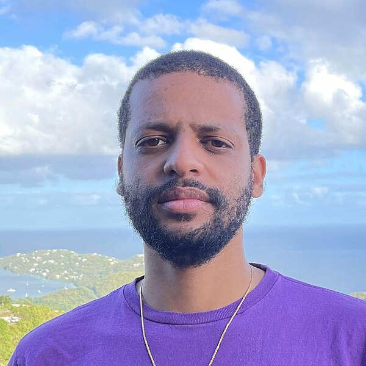

Jelani Nelson

Great Ethiopian scientist and professor who played a leading role in the development of Ethiopia’s Electrical Engineering and Computer Sciences
Great Ethiopian scientist and professor who played a leading role in the development of Ethiopia’s Electrical Engineering and Computer Sciences
About the Legend
Jelani Osei Nelson (Amharic: ጄላኒ ኔልሰን; born June 28, 1984) is an Ethiopian American Professor of Electrical Engineering and Computer Sciences at the University of California, Berkeley. He won the 2014 Presidential Early Career Award for Scientists and Engineers. Nelson is the creator of AddisCoder, a computer science summer program for Ethiopian high school students in Addis Ababa.
Early life and education
Nelson was born to an Ethiopian mother and an African-American father in Los Angeles, then grew up in St. Thomas, U.S. Virgin Islands.[1][2] He studied mathematics and computer science at the Massachusetts Institute of Technology and remained there to complete his doctoral studies in computer science.[3] His Master's dissertation, External-Memory Search Trees with Fast Insertions, was supervised by Bradley C. Kuszmaul and Charles E. Leiserson.[4] He was a member of the theory of computation group, working on efficient algorithms for massive datasets. His doctoral dissertation, Sketching and Streaming High-Dimensional Vectors (2011[5]), was supervised by Erik Demaine and Piotr Indyk.[6]
Career
Nelson is interested in big data and the development of efficient algorithms.[8] He joined the computer science faculty at Harvard University in 2013 and remained there until 2019 before joining UC Berkeley.[9] He is known for his contributions to streaming algorithms and dimensionality reduction, including proving that the Johnson–Lindenstrauss lemma is optimal (with Kasper Green Larsen),[10] developing the Sparse Johnson-Lindenstrauss Transform (with Daniel Kane),[11] and an asymptotically optimal algorithm for the count-distinct problem (with Daniel Kane and David P. Woodruff).[12] He holds two patents related to applications of streaming algorithms to network traffic monitoring applications.[13][14] Nelson was the recipient of an Office of Naval Research Young Investigator Award in 2015 and a Director of Research Early Career Award in 2016.[15] He was awarded an Alfred P. Sloan Foundation Fellowship in 2017.[16]